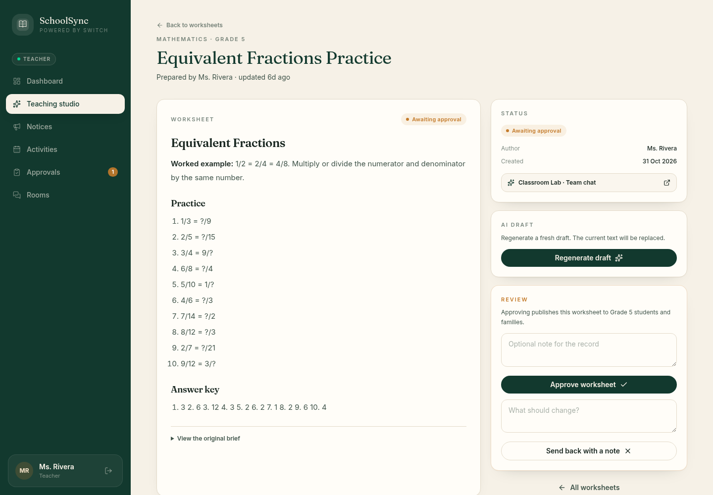
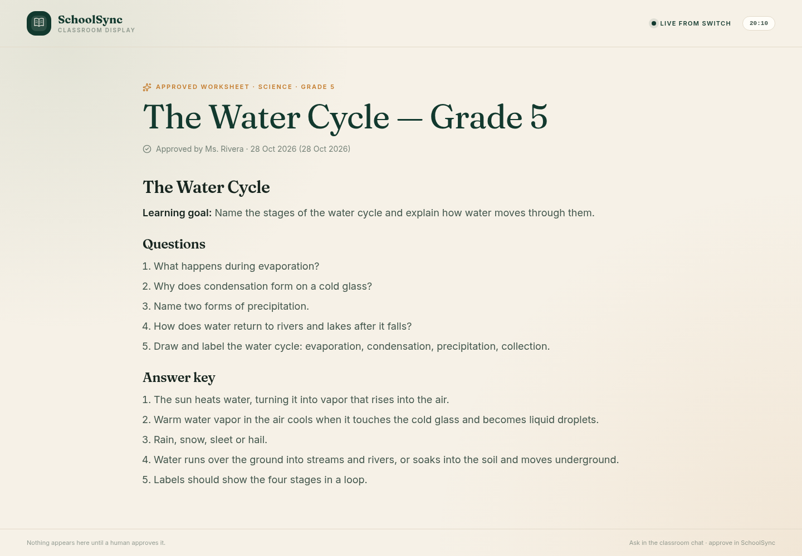
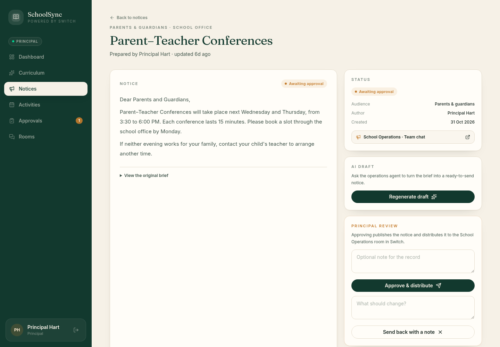
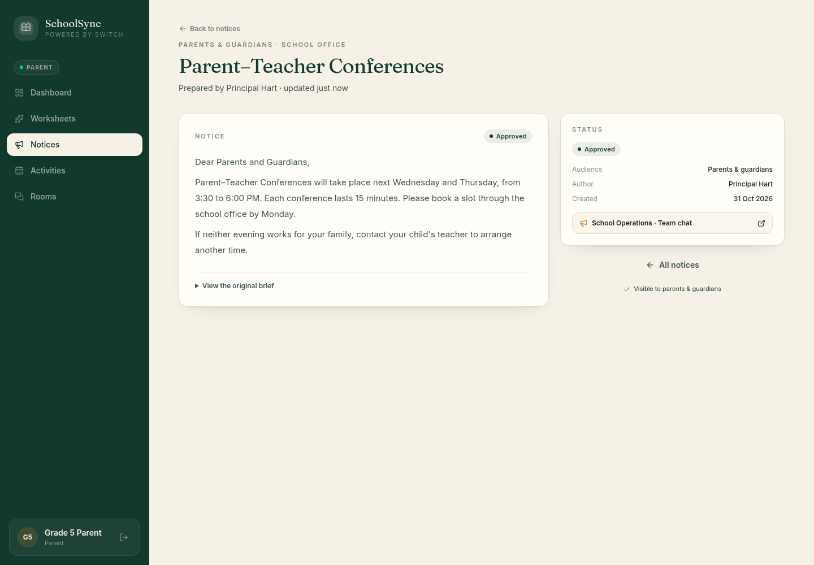
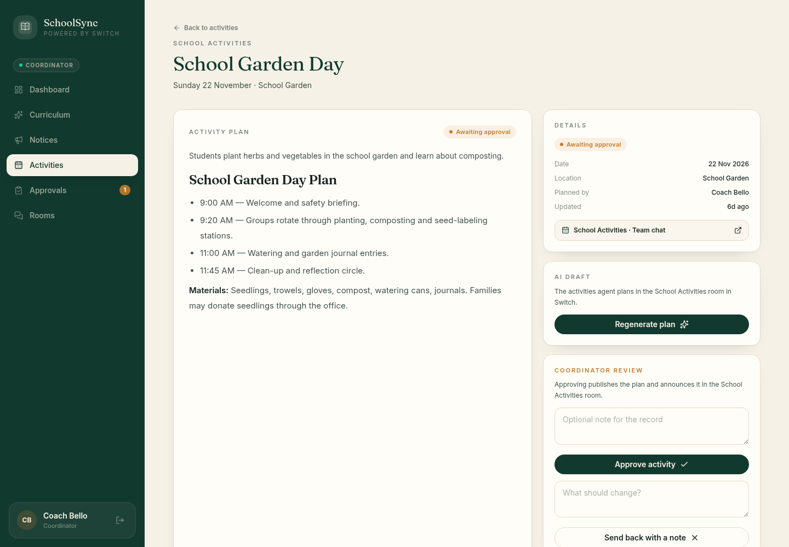
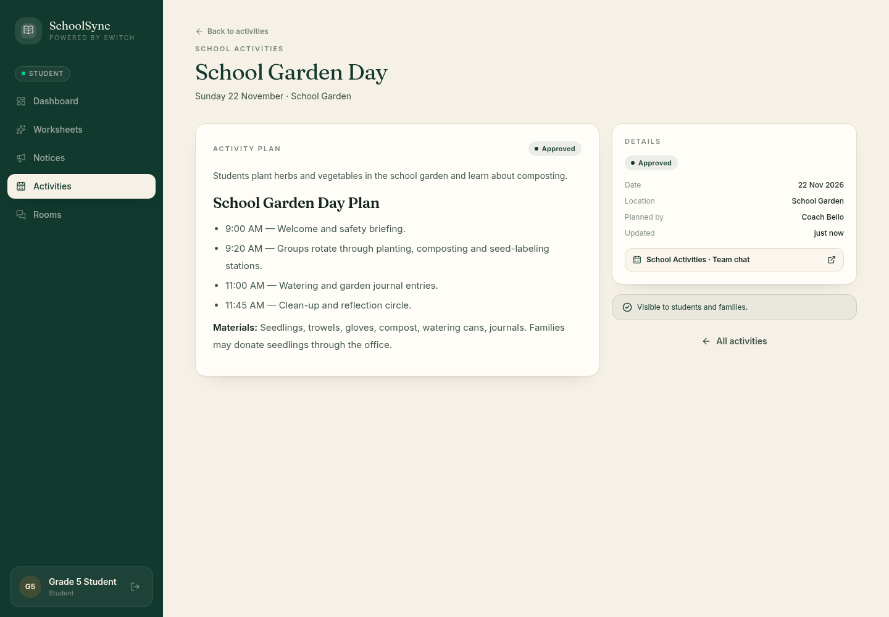

FLIP THE SWITCH HACKATHON · 2026
SchoolSync
One chat. Every classroom. One approval.
Built on Switch · Decisions stay human
THE PROBLEM
The small requests
add up.
A worksheet. A notice. An activity. Every one needs a first draft and a person who signs off.
Every one waits on a person.
01 / THE ASK
Teachers ask
where they
already talk.
No new tool. No prompt box. A message in the classroom group starts the work. The agent drafts; the room posts a one-tap approval card; a person decides.
@schoolsync-teaching-agent could you create a 5-question equivalent fractions worksheet for Grade 5, with an answer key?
- 1/2 = ?/42/3 = ?/9
- 3/4 = ?/85/10 = ?/2
- 4/6 = ?/12answer key included
Grade 5 · Ms. Rivera asks. Nothing publishes until a person approves.
02 / THE APPROVAL
A person
still makes
the call.
The draft lands in SchoolSync with the teacher's review. Approve, send back, or regenerate — nothing goes out on its own.

✓ApprovedMs. Rivera · just now03 / THE PROOF
Approved.
Then visible.
The approved worksheet lands on the read-only classroom display. The teacher's conversation stays in the classroom chat.

✓Classroom display · Grade 5 APPROVED04 / THE NOTICE
One approval. The right room. The right families.
The principal approves; the operations agent distributes the notice to the operations room and the parent portal.

✓DistributedParents & guardians
✓Parent viewNext Wednesday and Thursday, 3:30–6:00 PM. Book a 15-minute slot through the school office by Monday.
05 / THE ACTIVITY
The same loop for the school day.
A coordinator approves the plan; the activities agent announces it to the activities room and the student portal.

✓AnnouncedGrade 5 · Activities
✓Student viewSunday 22 November · 9:00–11:45 · School Garden. We will plant, compost, and keep garden journals. Materials: seedlings, trowels, gloves, compost, watering cans.
06 / UNDER THE HOOD
Chat is the interface. Switch is the bus.
Every group is a Switch room. Every agent is a Switch agent. Every outbound message waits for a person. The web app is optional for audit; the admin console watches exceptions and the audit trail.
WHY SWITCH
One Switch.
Every school loop.
Phone chat asks. Switch routes. The room posts the approval card. A person approves. The classroom screen publishes.
Without Switch, there is no shared room, no agent identity, no loop to approve.
Ask in chat. Draft with agent. Approve as a person. Publish to classroom. Less admin. More teaching.
SchoolSync · Flip the Switch Hackathon · 2026